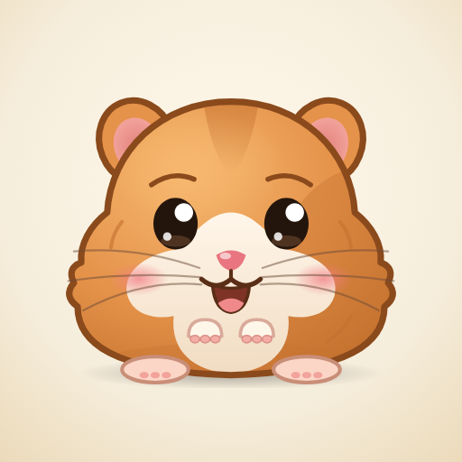

Un jeu d'élevage cosy pour Android : faites grandir votre élevage, mois après mois.
Télécharger sur Google PlayUn élevage sans fin : 20 titres à gagner, des commandes à livrer, des cages et des équipements à débloquer, une réputation à soigner.
Dix niveaux en trois chapitres, chacun avec sa leçon et son défi. Visez les trois étoiles !
Le jeu d'origine : 24 mois pour finir le plus riche possible, avec un défi du jour identique pour tous et des codes à partager.
Sans pression et sans fin : juste le plaisir de voir grandir votre élevage.
Une petite mascotte vous guide au début, puis vous laisse décider. En français, anglais, allemand, espagnol, italien et portugais.
Hamsters & Cie est gratuit et le restera, sans publicité ni achat. Si le jeu vous plaît, vous pouvez offrir un café au développeur. C'est un don : il ne débloque rien dans le jeu.
Faire un don sur Ko-fiDernière mise à jour : 16 novembre 2026